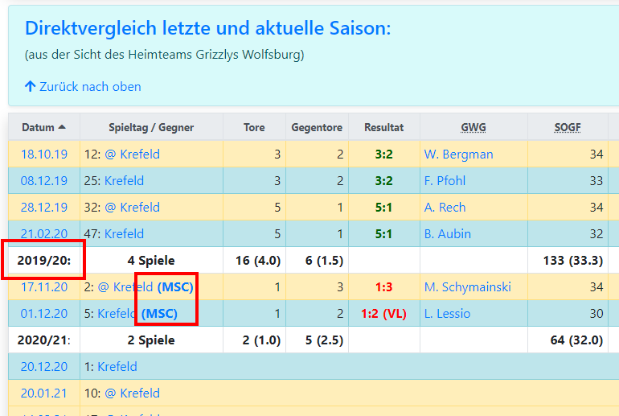
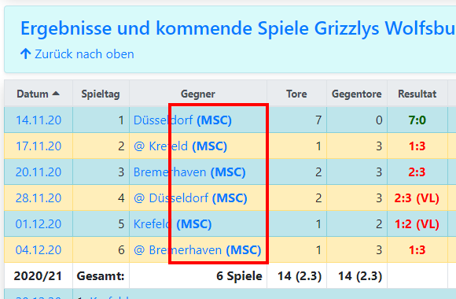
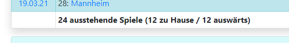
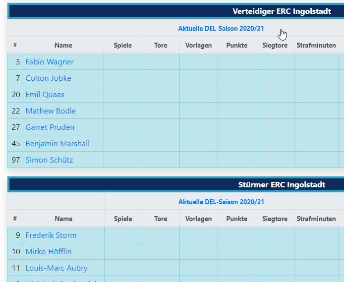
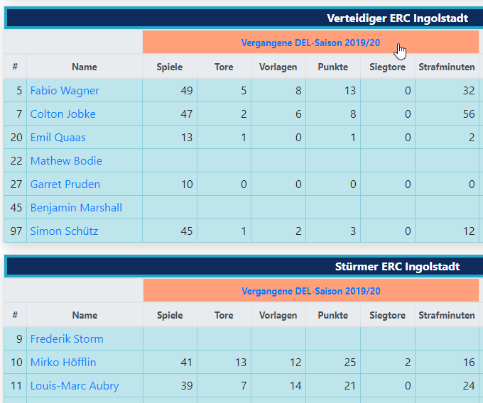
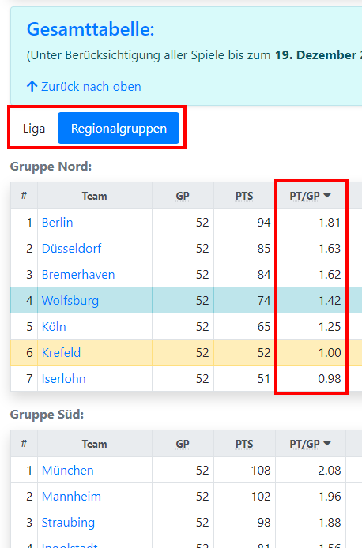
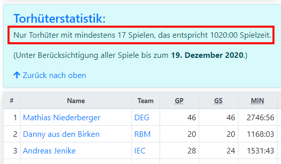

1) Beim Direktvergleich werden Partien aus der letzten Saison immer mit angezeigt und separat in einer Zeile zusammengefasst. Eventuell gegeneinander bestrittene Spiele im MagentaSport Cup sind mit (MSC) gekennzeichnet:

2) Auch in der Liste mit Ergebnissen und kommenden Spielen werden eventuelle Partien im MagentaSport Cup angezeigt. Andere Vorbereitungsturniere bzw. -spiele finden keine Berücksichtigung:

3) In der Fußzeile der Liste mit kommenden Spielen werden alle noch ausstehenden Spiele für ein Team numerisch zusammengefasst:

4) Die Kaderliste erlaubt das Umschalten zwischen Spielerstatistiken der aktuellen Saison und denen des Vorjahres durch Klick auf den Tabellenkopf:


5) Alle Ranglisten mit Teams werden durch Klick auf die entsprechende Option entweder nach Regionalgruppen (Nord und Süd) getrennt oder für die ganze Liga dargestellt. In den in Frage kommenden Tabellen wird gemäß offizieller Ansage nach Punkten pro Spiel sortiert.

6) Bei den Torhüterstatistiken wurde ein (adaptiver) Grenzwert eingeführt, der dafür sorgt, dass nur Spieler mit hinreichend Spielminuten in der Rangliste angezeigt werden. Eventuell wird dieser Grenzwert im Laufe der Saison noch ab und zu angepasst.
